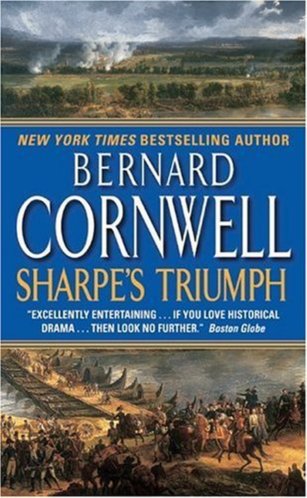
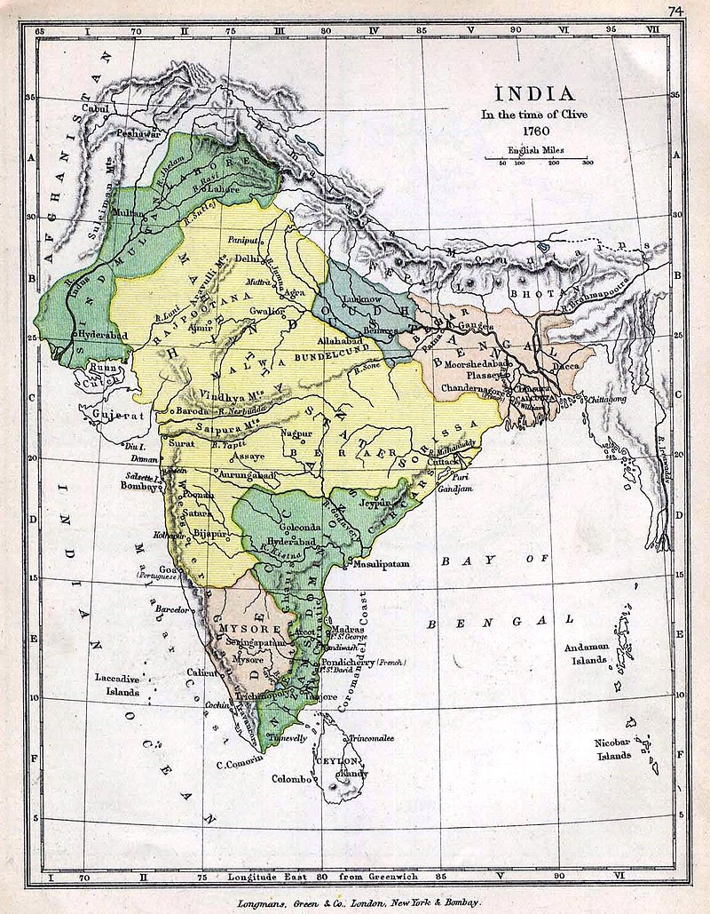
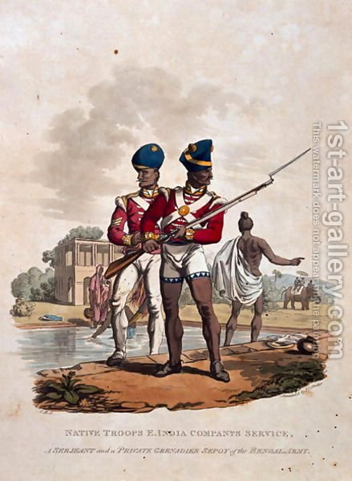

19세기초 영국군과 인도군은 어떻게 싸웠나 - Sharpe's Triumph
게시: 2019-01-17T06:30:00+09:00

Bernard Cornwell이 지은 Sharpe 시리즈는 1799년 영국군이 인도 중부 마이소르(Mysor) 지방을 침공하는 장면부터 시작됩니다. 그로부터 3년 정도의 안정기를 지나, 마이소르 지방의 수도인 셰링가파탐이 영국군의 허수아비 노릇을 하는 인도 군주 하에서 안정화되자, 영국은 다시 더 북부의 마라타 연합이 지배하는 지역을 노립니다. 이런 식으로 영국이 인도 전체를 식민지화하는데는 무려 100년 정도의 시간이 걸렸습니다. 로버트 클라이브가 7년 전쟁 도중 플라시 전투에서 프랑스군을 무찌르고 인도에서 영국의 주도권을 확보한 것이 1757년이었으니까, 정말 오랜 세월에 걸쳐 야금야금 먹어들간 셈이지요. 인도 대륙이 정말 크긴 큰가 봅니다. 그래서 나폴레옹 전쟁이 한창인 무렵, 영국은 아직도 인도 대륙 일부만을 장악하고 있었을 뿐이었습니다.

영국이 이렇게 인도라는 블루 오션을 아무 경쟁없이 야금야금 파먹어가는 동안, 나폴레옹은 해군이 없어서 발만 동동 구르고 있었습니다. 그런데 정말 인도가 영국에게 있어 거저먹기인 블루 오션이었을까요 ? 그렇게 표현한다면 인도 사나이들을 너무 모욕하는 셈이지요. 당시 인도는 정말 수많은 소국으로 나누어져 있었고, 각 왕국은 정도의 차이는 있었지만, 영국이나 프랑스 등 유럽 각국의 문물, 특히 군사 기술을 많이 받아들여 유럽식 무장을 상당히 갖춘 편이었습니다.
영국은 이렇게 잘 무장된 왕국들을 때로는 무력으로, 때로는 이간질로 차례차례 각개격파했습니다. 그런 와중에서, 어쨌든 압도적인 숫자의 인도군을 제압할 수 있었던 것은, 무기가 비슷하더라도, 영국군의 훈련 및 전술 전략이 우월했기 때문이라고 인정할 수 밖에 없습니다.
훗날 웰링턴 공작이 되는 아더 웰슬리도 군 생활 초기는 인도에서 시작합니다. 아래 묘사되는 전투는 훗날 웰링턴 공작에게 누군가 '공작께서 가장 자랑스럽게 생각하는 전투는 어느 전투입니까'라고 질문하자, 웰링턴이 망설이지 않고 뽑은 아사예 전투입니다. 여기서 웰슬리가 이끄는 영국 정규군 스코틀랜드 연대와 동인도 회사 소속의 세포이 연대들은 인도 중북부의 마라타(Maratha) 연합군과 혈전을 벌입니다. 이 전투의 묘사를 보면, 당시 보병과 포병이 어떤 식으로 전투를 벌였는지 실감나게 느끼실 수 있으실 것입니다.
Sharpe's Triumph by Bernard Cornwell (배경: 1803년 인도) -------------------------------------
스코틀랜드 연대는 이제 언덕을 올라가고 있었다. 그들은 관목 그루터기를 짓밟으며 나아갔고, 이제 곧 언덕 능선을 넘어서면 또 다시 인도군 포병대에 노출되면서 대포 사격을 받게 될 것이었다. 인도 포병대에게 처음으로 관측되는 것은 두 개의 연대 깃발일테고, 다음으로는 말을 탄 장교들, 그리고는 붉은색, 흰색, 검은색으로 치장된 전체 연대들이 머스켓 소총에 장착된 총검을 햇빛에 번쩍이며 인도군의 시야에 들어갈 것이었다.
'그리고는 신의 도움이 필요할테지'라고 샤프는 생각했다. 그도 그럴 것이, 바로 앞쪽에 있는 망할 놈의 대포들은 그 사이에 모두 재장전을 마쳤을 것이고, 이제 표적물이 다시 시야에 들어오기만을 기다리고 있을 것이기 때문이었다. 그때 갑자기 첫번째 대포알이 바로 몇 발자욱 앞에 쾅하고 떨어졌다가 튕겨올라 아무런 해도 입히지 않고 머리 위로 넘어갔다.
"저 자식은 너무 일찍 쐈군." 바클리가 한마디 했다.
"이름을 적어 두지 그러나. (전투 중 잘못을 저지른 병사의 이름을 적어두었다가 체벌하는 관습에 대한 농담임 : 역주)"
샤프는 오른쪽을 보았다. 모두 세포이 용병으로 구성된 그 쪽 4개 연대는 아직 언덕 능선에 가려져서 대포의 포격으로부터는 안전한 사각지대에 있었고, 오록 대령의 초계병력과 제74 연대는 계곡 북쪽의 숲 속으로 들어가 눈에 보이지 않는 상태였다. 하니스 대령의 스코틀랜드 연대가 가장 먼저 언덕 능선을 넘을 것이고, 적어도 한순간은 전체 적 포병대의 집중 공격 대상이 될 것이었다. 몇몇 하이랜더(스코틀랜드인의 별칭 : 역주)는 마치 이왕 맞을 매를 빨리 맞겠다는 듯이 서두르고 있었다.
"천천히 !" 하니스 대령이 고함을 질렀다.
"이게 뭐 술집을 향한 달음박질인 줄 알아 ? 이 빌어먹을 놈들아 !"
엘시. 갑자기 샤프의 머리 속에 자기가 양조장 골목에서 도망친 이후 숨어들었던 웨더비 근처의 술집에서 일하던 여자의 이름이 떠올랐다. 왜 그 여자 이름이 기억나지 ? 그리고는 그 술집 내부의 광경이 떠올랐다.
'겨울비에 젖은 남자들의 코트에서 김이 올라오고, 엘시를 비롯한 여급들이 쟁반 위에 에일을 나르는 동안, 벽난로에서는 불이 타닥 소리를 내고 있겠지. 눈이 먼 목동은 술에 취했고, 개들이 식탁 밑에서 자고 있는 그 때, 내가 장교의 장식띠를 매고 칼을 찬 모습으로 그 검댕투성이 술집으로 걸어들어가는거야'
이런 상상을 하는 동안 샤프는 요크셔에 대한 것은 모두 잊어버렸고, 그 사이에 제778 연대는 웰슬리 장군의 참모진을 오른쪽에 끼고, 적 포병대의 코 앞의 평지로 올라섰다.
샤프가 우선 놀란 점은 적 포병대가 생각보다 굉장히 가까웠다는 것이었다. 저지대를 통과하는 동안, 제778 연대는 적 포병대로부터 150보 전방까지 접근해 있었다. 샤프가 두번째로 놀란 것은, 인도군이 정말 멋지게 정비가 되어있다는 것이었다. 적 포병대는 마치 검열을 받듯이 정열해 있었고, 그 뒤로는 인도 마라타 연합군의 연대들이 4줄의 밀집 대형으로 깃발 아래 정렬해 있었다. 샤프가 '아마도 죽음이라는 것이 이렇게 생긴 모양이다'라고 생각할 때, 그 멋진 적군의 대형이 한꺼번에 모두 포연 속에 사라져 버렸다. 그 포연은 물결치듯이 밀려나왔는데, 그 속에서 불과 몇 야드 간격으로 포화의 번쩍임이 보였다. 쏟아져 나오는 포연 바로 앞의 곡식들이 포화의 바람에 휩쓸려 넘어지는 동안, 무거운 대포알들이 하이랜더들의 대오를 찢어놓으며 날아왔다.
사방에서 피가 튀었고, 박살이 난 병사들이 대살육 속에서 쓰러지거나 뒤로 휩쓸려 날아갔다. 어디선가 병사 하나가 가쁜 숨을 내쉬었지만 아무도 비명을 지르지는 않았다. 백파이프 연주병 하나가 다리가 날아간 채 쓰러진 병사에게 악기를 내던지고 달려갔다. 몇 야드 간격마다 죽거나 죽어가는 병사들이 뒤엉켜 쓰러져서, 전체 대열 중 어디를 대포알이 휩쓸고 지나갔는지를 명확하게 보여주고 있었다. 한 젊은 장교가 놀라서 눈을 뒤집고 머리를 흔드는 자기의 말을 진정시키려고 노력하고 있었다. 하니스 대령은 자기 앞에 창자가 터져나온 채 쓰러져 있는 병사에게 눈길 한번 주지 않고 자기 말을 그 옆으로 돌아가게 했다. 하사관들은 대열에 빈틈이 생긴 것이 마치 하이랜더들의 잘못이라는 듯이 화를 내며 곳곳에 생겨난 간격을 메꾸라고 소리를 질렀다.
그리고는 갑자기 어색할 정도로 조용해졌다. 웰슬리 장군은 옆을 보며 바클리에게 뭐라고 말을 했지만 샤프에게는 아무것도 들리지 않았는데, 그제서야 샤프는 적의 포격으로 자기의 귀가 멍멍해졌다는 것을 깨달았다. 웰슬리의 예비마인 디오메드가 샤프의 손아귀로부터 고삐를 당기며 옆으로 가려고 했기 때문에, 샤프는 그 회색말을 다시 자기 쪽으로 당겨야 했다. 피 위로는 온통 파리떼가 들끓었다. 한 하이랜더가 자기를 놔두고 행진해 나가는 동료들을 보며 엄청난 욕을 퍼부어대고 있었다. 그 병사는 무릎과 팔꿈치를 땅에 댄 채 엎드려 있었는데, 겉보기에는 상처는 전혀 없어 보였지만, 샤프를 한번 쳐다보면서 마지막으로 욕 한마디를 지껄이고는 푹 쓰러져 버렸다.
병사들의 배에서 터져 흘러나온 퍼런 창자 위로 더 많은 파리떼가 모여들었다. 다른 병사 하나는 머스킷 소총을 멜빵으로 질질 끌면서 관목 그루터기 사이를 기어갔다.
"이제 침착하게 !" 하니스 대령이 외쳤다.
"서두르지마 이 자식들아 ! 지금 달리기 경주하는 줄 알아 ? 니들 에미를 생각해 !"
"에미 ?" 블래키스턴 소령이 물었다.
"간격을 메워라 !" 하사관 하나가 외쳤다. "간격을 메워 !"
마라타 포병대는 미친 듯이 재장전을 하고 있었지만, 이번에는 보통의 쇠로 된 포탄이 아니고 속에 소총탄이 가득 든 깡통으로 된 산탄을 준비하고 있었다. 포연이 산들바람에 걷히고 있었고, 샤프의 눈에 포구를 쑤시며 화약을 운반하는 적병들의 모습이 들어왔다. 다른 적병들은 아까의 포격으로 뒤로 밀려갔던 포신들을 지렛대로 다시 스코틀랜드 연대에게 조준하고 있었다.
웰슬리는 그의 숫말이 하이랜더들의 대열 앞에서 너무 멀리 나아가지 못하도록 억누르고 있었다. 오른쪽에는 아무 것도 보이지 않았다. 세포이 용병들은 아직 언덕 능선 밑의 사각지대에 있었고, 우익은 북쪽의 숲과 구릉에 가려서 보이지 않았다. 그래서 이 순간에는 하니스 대령의 하이랜더들 600명이 10만 명의 인도 마라타 군을 상대로 전투를 치루고 있는 것처럼 보였다. 하지만 스코틀랜드인들은 주저하지 않았다. 그들은 부상자와 전사자를 뒤에 내버려두고 자기들의 죽음을 장전한 채로 기다리는 적의 대포를 향해 탁 트인 벌판을 걸어갔다. 백파이프 연주병이 다시 연주를 시작했고, 그 사나운 음악이 하이랜더들의 발걸음에 새로운 힘을 주는 듯 했다. 그들은 죽음을 향해 걸어가고 있었지만 완벽한 대오를 이루고 있었고 아주 평온해 보였다. '사람들이 스코틀랜드인들에 대해 노래를 만든게 거저 만든게 아니군' 하고 샤프는 생각했다. 그때 말발굽 소리가 뒤에서 들려 돌아보니 캠벨 대위가 아까의 전령 임무로부터 돌아오고 있었다. (여기서 등장하는 캠벨 대위는 아메드누거 성벽 위에 맨 처음 기어오른 공으로 1계급 특진하며 웰슬리에게 발탁된 바로 그 실존 인물 캠벨 대위입니다. : 역주)
대위는 샤프를 보고 씩 웃었다.
"난 내가 너무 늦었나 싶었지."
"시간에 딱 맞게 오셨습니다, 대위님. 정말 딱이요." 샤프는 말했다. 그리고는 황당해했다. '죽을 시간에 딱 ?'
캠벨은 웰슬리 장군에게 다가가서 보고를 했다. 장군은 듣고 고개를 끄덕이는 순간, 다시 앞쪽의 대포들이 불을 뿜었는데, 이번에는 아까처럼 일제히 쏘지 않고 재장전을 마친 순서대로 개별적으로 발사했다.
각각의 포성은 끔찍하게 커서 귀를 멍멍하게 울렸고, 산탄은 스코틀랜드군의 바로 앞에서 수많은 먼지 연기와 함께 튀어올라 병사들을 뒤로 낚아채듯 휩쓸어버렸다.
각각의 포탄은 속에 둥근 머스킷 소총탄이나 쇳조각, 돌조각이 가득 든 금속 깡통이었고, 포구를 떠나자마자 깡통이 찢어지며 그 내용물을 마치 거대한 산탄총처럼 쏟아붓는 것이었다.
차례차례 또 다른 대포가 불을 뿜었고, 각각의 포격이 대지를 강타하며 각각에게 할당된 스코틀랜드인을 저승으로 보내거나 혹은 고향 교구에게 부담이 될 불구자로 만들거나, 나중에 군의관의 무자비한 손에 고통을 당하도록 만들었다. 북치는 소년들은, 비록 하나는 다리를 절고 있었고 또 하나는 자기 북에 피를 뚝뚝 흘리고 있었지만 아직 연주를 계속하고 있었다. 백파이프 연주병들은 적의 대군 속으로의 행진이 마치 뭔가 축하할 일인 것처럼 좀더 쾌활한 음악을 연주했고, 몇몇 하이랜더들은 발걸음을 빨리 했다.
"그렇게 서두르지 마라 !" 하니스 대령이 외쳤다.
"그렇게 서두르지 마 !" 그는 큼직한 칼자루가 달린 클레이모어(스코틀랜드 식 대형 검)를 손에 들고 자기 병사들의 바로 뒤에 바짝 붙어서 가고 있었는데, 마치 병사들을 헤치고 말을 달려서 자기 연대를 박살내고 있는 적의 포병들에게 그 거대한 칼날을 들이대고 싶어하는 것 같았다. 산탄에 곰가죽 모자가 날아갔는데, 그걸 쓰고 있던 병사는 멀쩡했다.
"이제 침착해라 !" 소령 하나가 외쳤다.
"간격을 메워라 ! 간격을 메워 !" 하사관들이 외쳤다.
"대오의 간격을 메워라 !"
대오의 간격을 메우는 임무를 띤 상병들이 대열 뒤에서 바삐 움직이며 병사들을 좌우로 끌어다가 포탄이 휩쓸어간 자리를 메웠다. 이제 그 빈 자리를 더 넓어졌는데, 그 이유는 이전의 보통 대포알은 한번에 한개 열의 병사를 날려버렸지만, 지금의 산탄은 네다섯 열의 병사를 한꺼번에 낚아챘기 때문이었다.
네 문의 대포가 불을 뿜더니 이어서 다섯 번째, 그리고는 나머지 전체 대포들이 연달아 한꺼번에 불을 뿜었다. 샤프 주변의 공기는 거센 포탄이 일으키는 바람으로 갈기갈기 찢어졌고, 하이랜더들의 대열은 그 폭풍 속에서 뒤틀리는 듯 했다. 그 뒤에 피를 흘리고, 토하고, 울부짖고, 동료 혹은 어머니를 부르는 병사들을 남겨두긴 했지만, 그래도 남은 자들은 대오의 간격을 좁히며 굳건하게 계속 전진했다. 더 많은 대포들이 불을 뿜으며 적진을 포연으로 감쌌다. 샤프는 산탄이 연대의 병사들에게 날아와 꽂히는 소리를 들을 수 있었다. 세상의 모든 병사들이 그렇게 하듯, 하이랜더 병사들은 개머리판이 사타구니를 가리도록 소총을 들고 있었는데, 한방 한방의 포화로부터 수많은 머스킷 총탄이 쏟아져나와 병사들의 소총을 따닥 때리는 소리를 냈다. 이제 병사들의 대오는 처음보다 많이 짧아져 있었지만, 이제 적 대포가 뿜어낸 자욱한 포연의 가장자리까지 거의 도달했다.
"778 연대 !" 하니스 대령이 우렁찬 소리로 외쳤다. "정지 !"
웰슬리 장군은 말의 고삐를 당겼다. 샤프가 오른쪽을 보니, 계곡으로부터 세포이 용병들이 한줄의 긴 붉은 선으로 나오는 것이 보였는데, 그 선은 세포이들이 관목으로 가득찬 계곡을 통과하면서 조각조각 끊어져 있었다. 연이어 마라타 연합군의 북쪽 대오에서도 포격을 시작했고 세포이들의 대오는 더욱 더 조각나기 시작했다. 하지만, 그들 좌측의 스코틀랜드인들처럼, 세포이들도 포화를 무릅쓰고 전진했다.

(당시 영국군 정규병보다 세포이가 좋았던 점은 2가지 - 채찍질 체벌이 없었다는 것과 반바지)
"조준 !" 하니스의 구령 속에는 약간의 흥분감이 섞여있었다.
스코틀랜드 병사들은 머스킷 소총을 들어올려 조준했다. 이제 그들은 적 포병들로부터 겨우 60야드(54m) 떨어진 상태였고 활강총신을 가진 머스킷 소총도 그 정도의 거리에서는 상당히 정확했다.
"높게 쏘지 마라, 이 개새끼들아 !" 하니스가 경고했다.
"높게 쏘는 놈들은 한놈 한놈 채찍질을 할거다. 발사 !"
소총의 일제사격 소리는 거대한 대포 소리에 비하면 빈약하게 들렸지만 그 소리가 주는 안도감은 대단했고, 하이랜더들의 일제사격이 그루터기 너머를 휩쓰는 것을 보며 샤프는 하마트면 환호성을 올릴 뻔 했다. 적 포병들은 사라지고 없었다. 몇몇은 죽었을테지만, 나머지는 그저 큰 포가 뒤에 숨어있었다.
"재장전 !" 하니스가 소리쳤다.
"우물쭈물하지마라 ! 재장전 !"
여기서 그동안 하이랜더들이 받았던 훈련이 그 성과를 발휘했다. 머스킷 소총은 재장전하기가 무척이나 까다로운 물건이었고, 특히나 17인치(43cm)짜리 총검이 착검된 경우는 더욱 그랬다. 그 삼각형 칼날은 총구에 탄약을 밀대로 밀어넣는 것을 까다롭게 했기 때문에, 몇몇 병사들은 총검을 떼내어 재장전을 쉽게 하기도 했다. 하지만 모든 병사들은 고향에서 몇주간 힘들게 훈련받은 그대로, 신속하게 재장전했다. 탄약을 넣고, 밀대로 밀어넣고, 뇌관 화약을 집어넣고, 다시 밀대를 총신 홈에 집어넣었다. 총검을 떼어냈던 병사들은 서둘러 다시 착검했고, 다시 세워총 자세로 돌아갔다.
"지금 장전한 총알은 적 보병을 위해 남겨둔다 !" 하니스 대령이 외쳤다.
"이제 전진이다 ! 저 이교도 개자식들에게 제대로 된 안식일 학살이 뭔지 보여줘라 !"
이건 복수였다. 이건 그 동안의 분노의 고삐를 풀어준 것이었다. 적 대포는 아직 재장전되지 않은 상태였고, 적 포병대는 일제 사격의 충격에서 아직 벗어나지 못했다. 그리고 대부분의 대포는 스코틀랜드 병사들이 백병전 거리에 들어올때까지 재장전할 시간이 없을 것이었다. 몇몇 적 포병은 도주했다. 샤프의 눈에 말을 탄 마라타 장교 하나가 도주하는 포병들을 잡아들여 칼등으로 다시 원위치로 몰고 가는 것이 보였다. 또한, 자기 바로 앞에 있는 색칠이 된 거대한 대포를 두 명의 적 포병이 장전을 끝내고 옆으로 돌아나오는 것이 보였다.
"이제 우리가 받게 될 것에 대해서도... (뒤에는 '주님께 감사할 수 있도록 하소서 - 당시 일제 사격을 받기 전 병사들이 외우는 일종의 기도 : 역주)" 블래키스턴 소령이 중얼거렸다. 이 공병 장교도 적 포병이 재장전하는 것을 본 것이다.
그 대포가 불을 뿜었다. 그 포구로부터 몰아쳐닥친 포연이 장군 일행을 삼켜버렸다. 한순간 샤프는 희미한 연기 속에서 웰슬리 장군의 키 큰 윤곽을 보았다고 생각했지만, 다음 순간 보이는 것은 피바다 속에 쓰러지는 장군의 모습이었다. 산탄 조각들이 샤프 주변을 휩쓸고 나서 한 박자 뒤에 그 포격의 열기와 폭풍이 그의 몸을 휘감고 지나갔지만, 그는 웰슬리 장군의 바로 뒤에 있었으므로 포격을 정통으로 맞은 것은 바로 웰슬리였다.
실은 장군이 아니고 그의 말이었다. 그 종마는 십여발의 산탄을 맞았지만 웰슬리는 기적적으로 상처 하나 없었다. 그 큰 말은 땅에 쓰러지기도 전에 이미 숨이 끊어졌다. 말이 쓰러지기 전에 웰슬리가 발을 등자에서 빼면서 안장에 손을 대고 몸을 빼내는 것이 샤프의 눈에 들어왔다. 웰슬리는 오른발이 먼저 땅에 닿자, 종마의 몸무게가 그의 다리 위를 덮치기 전에 비틀거리며 펄쩍 뛰어 몸을 피했다. 캠벨 대위가 장군 쪽을 돌아다 보았지만, 장군은 그에게 그대로 전진하라고 손짓을 했다. 샤프는 타고있는 암말에 박차를 가하며 벨트에서 디오메드의 고삐를 풀어내었다. 먼저 죽은 말에게서 안장을 벗겨야 하나 ? 그럴 것 같다고 생각한 샤프는 먼저 말에서 내렸다. 하지만 죽은 종마에게서 안장을 벗겨내는 동안 암말과 디오메드는 어떻게 하지 ?